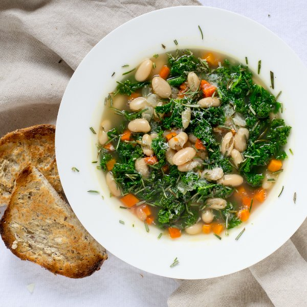

Tuscan Kale & White Bean Soup with Toast

Nutrition (per serving)
515.2 kcalCalories
27.4 gProtein
61.2 gCarbs
20.9 gFat
Full nutrition table
| Calories | 515.2 kcal |
| Total fat | 20.9 g |
| Saturated fat | 4.4 g |
| Trans fat | 0.3 g |
| Cholesterol | 4.8 mg |
| Sodium | 571.1 mg |
| Carbohydrates | 61.2 g |
| Fiber | 13.7 g |
| Sugars | 12.7 g |
| Protein | 27.4 g |
| Potassium | 1365.6 mg |
| Calcium | 277.7 mg |
| Iron | 5.6 mg |
| Vitamin A | 80.3 IU |
| Vitamin C | 104.4 mg |
| Vitamin D | 1.4 IU |
Cookware
Ingredients
- 2 (15 oz) canscannellini (white kidney) beans
- 4 mediumcarrots
- 48 fl ozchicken or vegetable broth
- 1 small pkgfresh rosemary
- 4 clovesgarlic
- 2 buncheskale
- 1 ozParmesan cheese
- 2whole grain buns or rolls
- 1 mediumyellow onion
- black pepper
- crushed red pepper
- extra virgin olive oil
- salt
Steps
- Wash and dry the fresh produce.4 medium carrots
2 bunches kale
1 small pkg fresh rosemary - Trim off the ends and peel the carrots; discard the peels and trimmings. Small dice the carrots (cut into ¼-inch cubes) and transfer to a medium bowl.
- Preheat a medium saucepan over medium-high heat.
- Trim off and discard the ends of the onion and remove the outer layer; small dice the onion (cut into ¼-inch pieces) and add to the bowl with the carrots.1 medium yellow onion
- Open the cans of beans, but don't drain.2 (15 oz) cans cannellini (white kidney) beans
- Add olive oil to the saucepan and swirl to coat the bottom.4 tbsp extra virgin olive oil
- Add the carrots and onion to the saucepan; cook, stirring frequently, until the vegetables have softened, 3 to 4 minutes.
- One by one, holding a sprig of rosemary at its top, run you fingers down it to remove the leaves. Discard the sprigs and chop the leaves; transfer the leaves to a small bowl.
- Trim off and discard the root end of the garlic; peel and mince or press the garlic.4 cloves garlic
- Add the minced garlic and crushed red pepper to the saucepan; cook, stirring constantly, until fragrant, 15 to 30 seconds.½ tsp crushed red pepper
- Add the beans and their liquid, broth, rosemary, salt, and pepper to the saucepan. Increase the heat to high and bring to a boil.48 fl oz (6 cups) chicken or vegetable broth
1 tsp salt
½ tsp black pepper - When the soup comes to a boil, reduce the heat to a simmer, cover, and cook for 10 minutes.
- While the soup cooks, fold each kale leaf lengthwise, slice away and discard the stems, and chop the leaves into 1-inch pieces.
- Finely grate ½ cup of Parmesan.1 oz Parmesan cheese
- Uncover the saucepan, stir in the kale and ½ of the Parmesan (save the rest for garnishing), then cover again and continue to cook until the kale is wilted, 2 to 3 minutes.
- Slice the buns in half and toast (optional).2 whole grain buns or rolls
- To serve, ladle the soup into a bowl and garnish with the remaining Parmesan. Serve with the toasted bun on the side. Enjoy!